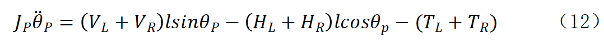
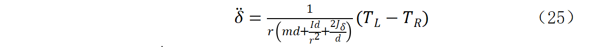
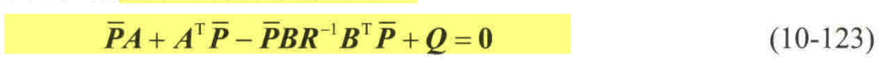

一、物料清单
物料清单包含所用到的电子件、机械件和3D打印件，并对额外的工具作了说明，本次电机和stm32开发板用的是同一个厂家的产品，电机自带驱动，省去了自写FOC算法，只需熟悉电机通信协议即可对电机有较好的控制，且厂家自带的范例已能应付很多场景。
二、电气接线图
电机要先配好ID,esp32开发板要先刷好程序再开始组装。
三、相关算法理论
首先要确定我们要实现功能的先后顺序，即电机转动–>小车直立–>小车遥控。
1、电机转动
本次用的直立算法是LQR,输出的是力矩，所以用电机的MIT模式。
根据通信协议，我们查看厂家给的CAN控制函数范例。
1
2
3
4
5
6
7
8
9
10
11
12
13
14
15
16
17
18
19
20
21
22
23
24
25
26
27
28
29
30
31
32
33
34
35
36
37
|
/**
************************************************************************
* @brief: mit_ctrl: MIT模式下的电机控制函数
* @param[in]: hcan: 指向CAN_HandleTypeDef结构的指针，用于指定CAN总线
* @param[in]: motor_id: 电机ID，指定目标电机
* @param[in]: pos: 位置给定值
* @param[in]: vel: 速度给定值
* @param[in]: kp: 位置比例系数
* @param[in]: kd: 位置微分系数
* @param[in]: torq: 转矩给定值
* @retval: void
* @details: 通过CAN总线向电机发送MIT模式下的控制帧。
************************************************************************
**/
void mit_ctrl(hcan_t* hcan, uint16_t motor_id, float pos, float vel,float kp, float kd, float torq)
{
uint8_t data[8];
uint16_t pos_tmp,vel_tmp,kp_tmp,kd_tmp,tor_tmp;
uint16_t id = motor_id + MIT_MODE;
pos_tmp = float_to_uint(pos, P_MIN, P_MAX, 16);
vel_tmp = float_to_uint(vel, V_MIN, V_MAX, 12);
kp_tmp = float_to_uint(kp, KP_MIN, KP_MAX, 12);
kd_tmp = float_to_uint(kd, KD_MIN, KD_MAX, 12);
tor_tmp = float_to_uint(torq, T_MIN, T_MAX, 12);
data[0] = (pos_tmp >> 8);
data[1] = pos_tmp;
data[2] = (vel_tmp >> 4);
data[3] = ((vel_tmp&0xF)<<4)|(kp_tmp>>8);
data[4] = kp_tmp;
data[5] = (kd_tmp >> 4);
data[6] = ((kd_tmp&0xF)<<4)|(tor_tmp>>8);
data[7] = tor_tmp;
canx_send_data(hcan, id, data, 8);
}
|
*MIT命令采用浮点数据等比例转换成整数发送到驱动器，驱动器再将接收到的整数等比例转换成浮点数据。这转换需要用到转换函数float_to_uint，这转换函数需要首先确定两个等比例转换的最大最小值，这两个值可以在上位参数设定页面查询，其中 KP、KD 的最大最小值默认分别为 0.0~500.0、0.0~5.0。Pos、Vel、Torque 分别预设为±12.5、±30、±10，这三个参数可以根据电机的实际参数进行调整。但发送控制命令时，一定要与设定值保持致，否则会控制命令会发生等比例缩放。
下图是电机MIT模式的控制框图
MIT模式可实现力矩、位置、速度三者混合控制，在上图中，位置环与速度环是并联形式，这里的位置环与速度环的输出值与前馈力矩t_ff相加得到参考力矩T_ref：
其中:
T_ref 为参考力矩，单位是 N·m。
kp 为位置增益。kd 为速度增益。
p_des 为电机输出轴的期望位置，单位为 rad。
θm 为电机输出轴的当前位置，单位为 rad。
v_des 为电机输出轴的期望速度，单位为 rad/s。
为电机输出轴的当前速度，单位为 rad/s。
参考力矩 T_ref 经过 KT_OUT 换算，得到参考电流 iqref，从而进入后续的电流 PI 控制器。
其中：
iqref 为参考电流，单位为 A。
GR 为电机减速比。
Kt 为减速前的转矩常数，单位是 N·m/A。
NPP 是极对数。
flux 磁链，单位是 Wb，可以通过读电机参数得出。
根据厂家的通信协议，每次发送指令后会有反馈帧，对反馈帧处理可得到包括电机ID、状态、位置、速度、扭矩相关温度参数、寄存器数据等。
1
2
3
4
5
6
7
8
9
10
11
12
13
14
15
16
17
18
19
20
21
22
23
24
25
26
27
|
/**
************************************************************************
* @brief: dm4310_fbdata: 获取DM4310电机反馈数据函数
* @param[in]: motor: 指向motor_t结构的指针，包含电机相关信息和反馈数据
* @param[in]: rx_data: 指向包含反馈数据的数组指针
* @param[in]: data_len: 数据长度
* @retval: void
* @details: 从接收到的数据中提取DM4310电机的反馈信息，包括电机ID、
* 状态、位置、速度、扭矩相关温度参数、寄存器数据等
************************************************************************
**/
void dm4310_fbdata(Joint_Motor_t *motor, uint8_t *rx_data,uint32_t data_len)
{
if(data_len==FDCAN_DLC_BYTES_8)
{//返回的数据有8个字节
motor->para.id = (rx_data[0])&0x0F;
motor->para.state = (rx_data[0])>>4;
motor->para.p_int=(rx_data[1]<<8)|rx_data[2];
motor->para.v_int=(rx_data[3]<<4)|(rx_data[4]>>4);
motor->para.t_int=((rx_data[4]&0xF)<<8)|rx_data[5];
motor->para.pos = uint_to_float(motor->para.p_int, P_MIN, P_MAX, 16); // (-12.5,12.5)
motor->para.vel = uint_to_float(motor->para.v_int, V_MIN, V_MAX, 12); // (-30.0,30.0)
motor->para.tor = uint_to_float(motor->para.t_int, T_MIN, T_MAX, 12); // (-10.0,10.0)
motor->para.Tmos = (float)(rx_data[6]);
motor->para.Tcoil = (float)(rx_data[7]);
}
}
|
再下一层就是stm32hal库的can初始化和发送接收函数了。
1
2
3
4
|
void MX_FDCAN1_Init(void)
...
uint8_t canx_send_data(FDCAN_HandleTypeDef *hcan, uint16_t id, uint8_t *data, uint32_t len)
....
|
2、小车直立
LQR和PID控制算法的对比
对比如下表（摘自网络）。
| 特性 |
LQR |
PID |
| 控制对象 |
多变量耦合系统（如小车角度+位置） |
单变量系统（如水温） |
| 设计原理 |
基于数学模型优化（解 Riccati 方程） |
基于误差经验调参 |
| 核心优势 |
全局最优 • 多状态自动协调 |
简单易用 • 无需模型 |
| 参数调整 |
调权重矩阵（Q/R） |
调三个系数（Kp/Ki/Kd） |
| 抗干扰能力 |
✅ 更强（通过状态权重主动抑制） |
❌ 高频噪声易放大 |
| 适用系统 |
线性系统 • 精确建模场景 |
非线性系统 • 模型未知场景 |
| 计算复杂度 |
离线计算复杂 • 在线计算简单 |
全程计算简单 |
| 典型应用 |
倒立摆 • 无人机 • 机械臂 |
温控 • 液位控制 • 电机调速 |
这里直立算法选择用LQR，后面有时间也会出一版PID的程序。
LQR数学模型
运动学
运动学模型主要描述两轮自平衡机器人运动速度、转向和左右两轮速度之间的关系。
动力学
a.对于车轮
针对右轮进行受力分析
车轮的运动可分解为平动和转动，则由牛顿第二定律可得：
由刚体定轴转动定律可得
上式（1）（2）中
m为车轮的质量（kg）；
r为车轮的半径（m）；
xR为右轮水平位移（m）；
HfR为右轮受到地面摩擦力的大小（N）；
HR为右轮受到车体作用力的水平分力的大小（N）；
TR为右轮电机输出转矩的大小（N/m）；
I为车轮的转动惯量（kg/m2）；
WR为右轮的角度的大小（rad/s）
联立（1）和（2），消去HfR,可得
在车轮不打滑的情况下，车轮移动速度的大小和转动速度的大小成比例关系，即
将方程（4）代入（3）中，可得
由于左右轮的参数相同，则对左轮也可以得到相似的结果，即
b.对于车身正向
小车的正向运动可以分解为前向运动和绕车体质心P的相对转动（俯仰）。小车底盘中心O的水平位移
将方程（5）和（6）相加后，等式两边处以2可得
联立方程（7）（8）可得
对车体，由牛顿第二定律可得
在水平方向上，有
在竖直方向上，有
对车体，由刚体定轴转动定律可得

其中
M 车体的质量（kg）；
l 质心距底盘中心的距离（m）；
JP 车体绕质心转动时的转动惯量（kg/m2）；
θP车体与竖直方向所成的夹角（rad）；
联立方程（9）（10）可得
c.模型线性化
因为该方程含有非线性项，因此，要进行线性化。考虑到车体的倾角比较小（通常情况下，−10°≤倾角≤10°），则可以认为
故方程（13）变为
将方程（10）和（11）代入方程（12）中，可得
类似的，对方程 （15）进行线性化可得
将方程（16）代入方程（14）中，消去θP二阶导可得
式中
将方程（14）代入方程（16）中，消去x二阶导可得
式中
综上所述，对于正向运动有
对车体，由刚体定轴转动定律可得
d.转向运动
转向运动是由于左右两车轮从水平方向上施加给车体的反作用力的大小HL和HR不相等引起的，则由刚体定轴转动定律可得
其中
d 轮距（m）
Jδ 车体绕y轴转动的转动惯量（kg/）
δ 小车的偏航角（rad）
将方程（5）和（6）相减可得
对车体，由刚体定轴转动定律可得
小车转向示意图
当左右两轮运动速度不相等时，小车身转向，如图 2-4 所示。由几何关系可得
解得
由方程（23）进一步可得
联立方程（20）（21）（24）可得

由方程（19）和（25）可得系统的状态方程为
左侧的状态变量分别表示小车的位移、前进速度、车体的倾角、车体的角速度、小车的转向角以及转向速度。由于电机输出转矩的大小不好直接控制，则由刚体定轴转动定律将其转化为两个车轮的加速度。
其中
VLO左轮无摩擦时线速度的大小（rad/s）
VRO右轮无摩擦时线速度的大小（rad/s）
故系统的状态空间表达式变为
矩阵中的元素为
其中
LQR控制器
最优控制在现代控制理论中有着及其重要的位置，其研究目标是使受控系统的性能指标达到最优时，所需要的基本条件，及其控制的综合方法。
线性二次型（LQR）控制，是一种线性状态反馈控制方法，是最优控制理
论中最成熟、最系统的方法。
(1)系统状态方程
(2)性能指标
(3)反馈增益矩阵K
(4)Riccati代数方程

仿真
(1)Simulink模型
(2)MATLAB代码
1
2
3
4
5
6
7
8
9
10
11
12
13
14
15
16
17
18
19
20
21
22
23
24
25
26
27
28
29
30
31
32
33
34
35
36
37
38
39
40
41
42
43
44
45
46
47
48
49
50
51
|
clc
clear
% 模型参数初始化
m=0.178; %车轮的质量 kg
r = 0.03375; %车轮的半径 m
M = 0.610; %车体的质量 kg
I = 0.5*m*r^2; %车轮的转动惯量
l = 0.055; %质心距底盘中心的距离
Jz = (1/3)*M*l*l; %车体绕质心转动时的转动惯量
g=9.8; %重力加速度，单位为m/s^2
%状态空间参数初始化
a=r*(M+2*m+2*I/(r^2));
b=M*r*l;
c=Jz+M*l^2;
d=M*g*l;
e=M*l;
A23=-b*d/(a*c-b*e);
A43=a*d/(a*c-b*e);
B21=(c+b)/(a*c-b*e);
B22=(c+b)/(a*c-b*e);
B41=-(e+a)/(a*c-b*e);
B42=-(e+a)/(a*c-b*e);
%状态空间矩阵
A=[0 1 0 0 ;
0 0 A23 0 ;
0 0 0 1;
0 0 A43 0 ] ; %状态矩阵
B=[0 0;
B21 B22;
0 0;
B41 B42]; %输入矩阵
%系统可控性判断
Co=ctrb(A,B);
if(rank(Co)==4)
disp('系统可控');
else
disp('系统不可控');
end
%LQR控制器设计
Q = [0.1 0 0 0 ;
0 1 0 0 ;
0 0 70 0 ;
0 0 0 0.05 ]; %权重矩阵 Q 的设计
R = [120 0; 0 120]; %权重矩阵 R 的设计
K=lqr(A,B,Q,R) %调节参数
|
(3)python代码
1
2
3
4
5
6
7
8
9
10
11
12
13
14
15
16
17
18
19
20
21
22
23
24
25
26
27
28
29
30
31
32
33
34
35
36
37
38
39
40
41
42
43
44
45
46
47
48
49
50
51
52
53
54
55
56
57
58
59
60
61
62
63
64
65
|
import numpy as np
import control as ctrl
# 模型参数初始化
m = 0.178 # 车轮的质量 kg
r = 0.03375 # 车轮的半径 m
M = 0.610 # 车体的质量 kg
I = 0.5 * m * r**2 # 车轮的转动惯量
l = 0.055 # 质心距底盘中心的距离
Jz = (1/3) * M * l * l # 车体绕质心转动时的转动惯量
g = 9.8 # 重力加速度 m/s²
# 状态空间参数计算
a = r * (M + 2*m + 2*I/(r**2))
b = M * r * l
c = Jz + M * l**2
d = M * g * l
e = M * l
# 计算中间参数
denominator = a*c - b*e # 公共分母
A23 = -b*d / denominator
A43 = a*d / denominator
B21 = (c + b) / denominator
B22 = B21 # 与 B21 相同
B41 = -(e + a) / denominator
B42 = B41 # 与 B41 相同
# 构建状态空间矩阵
A = np.array([
[0, 1, 0, 0],
[0, 0, A23, 0],
[0, 0, 0, 1],
[0, 0, A43, 0]
])
B = np.array([
[0, 0],
[B21, B22],
[0, 0],
[B41, B42]
])
# 检查系统可控性
Co = ctrl.ctrb(A, B)
rank = np.linalg.matrix_rank(Co)
print("系统可控" if rank == 4 else "系统不可控")
# LQR控制器设计
Q = np.array([
[0.1, 0, 0, 0],
[0, 1, 0, 0],
[0, 0, 70, 0],
[0, 0, 0, 0.05]
])
R = np.array([
[120, 0],
[0, 120]
])
# 计算LQR增益
K, _, _ = ctrl.lqr(A, B, Q, R)
print("\nLQR增益矩阵 K:")
print(K)
|
(4)实验结果
核心是调节Q/R矩阵的4个权重值（位置/速度/角度/角速度)
角度权重 » 位置权重 (通常10倍以上)
参考资料
【电机仿真】LQR控制器——二轮平衡小车控制
超详细!!双轮平衡小车原理分析,文末附STM32源码!
实物部署
通过LQR矩阵分别与对应的数值差计算再累加，可得出电机的力矩大小，如果只是直立的话，只计算其中一个力矩，另外一个数值即等大反向。
将程序烧录到小车上后可观察出力矩方向看是否正负反了。
1
2
3
4
5
6
7
8
9
10
11
12
13
14
15
16
17
18
19
20
21
22
23
24
25
26
27
28
29
30
31
32
33
34
35
36
37
38
39
40
41
42
|
float lqr_k[2][4]={{-0.02041241, -0.09635536, -0.65913956, -0.03197374},
{-0.02041241, -0.09635536, -0.65913956, -0.03197374}};
void ChassisR_task(void)
{
while(INS.ins_flag==0)
{//等待加速度收敛
osDelay(1);
}
ChassisR_init(&chassis_move);
while(1)
{
chassisR_feedback_update(&chassis_move,&INS);//更新数据
chassis_move.wheel_motor[1].wheel_T=lqr_k[0][0]*(chassis_move.x_set-chassis_move.x)
+lqr_k[0][1]*(chassis_move.v_set-chassis_move.v)
+lqr_k[0][2]*(0.03f-chassis_move.myPithR)//0.03rad是机械中值
+lqr_k[0][3]*(chassis_move.d_phi_set-chassis_move.myPithGyroR);
chassis_move.wheel_motor[0].wheel_T=-chassis_move.wheel_motor[1].wheel_T;
scaled_down(&chassis_move.wheel_motor[0].wheel_T, &chassis_move.wheel_motor[1].wheel_T,-0.1f,0.1f); //限幅，等比例缩放
if(chassis_move.start_flag==1)
{
mit_ctrl2(&hfdcan1,0x01, 0.0f, 0.0f,0.0f, 0.0f,chassis_move.wheel_motor[0].wheel_T);//左边电机
osDelay(CHASSR_TIME);
mit_ctrl2(&hfdcan1,0x02, 0.0f, 0.0f,0.0f, 0.0f,chassis_move.wheel_motor[1].wheel_T);//右边电机
osDelay(CHASSR_TIME);
}
else if(chassis_move.start_flag==0)
{
chassis_move.turn_set=chassis_move.total_yaw;
mit_ctrl2(&hfdcan1,0x01, 0.0f, 0.0f,0.0f, 0.0f,0.0f);//左边电机
osDelay(CHASSR_TIME);
mit_ctrl2(&hfdcan1,0x02, 0.0f, 0.0f,0.0f, 0.0f,0.0f);//右边电机
osDelay(CHASSR_TIME);
}
}
}
|
上面的程序中计算出力矩后还是进行了限幅的操作，防止力矩过大。
小车成功直立后可微调K矩阵让效果更好
3、小车遥控
硬件及遥控数据接收程序
小车遥控的接收板选用的是带蓝牙wifi的wsp32，既可以实现2.4g网络遥控，也可以通过蓝牙遥控，价格也不比单独的蓝牙模块贵。
手柄选用的是国产xbox系列的，刚好github上有网友分享了xbox+esp32的程序，稍微改下即可使用。
1
2
3
4
5
6
7
8
9
10
11
12
13
14
15
16
17
18
19
20
21
22
23
24
25
26
27
28
29
30
31
|
void loop()
{
xboxController.onLoop();
delay(50);# 控制发送频率
if ((xboxController.xboxNotif.btnStart == 1) && (last_start != xboxController.xboxNotif.btnStart))
if (start == 0)
start = 1;
else
start = 0;
last_start = xboxController.xboxNotif.btnStart;
if (xboxController.isConnected() && (start == 1))
{
if (xboxController.isWaitingForFirstNotification())
{
Serial.println("waiting for first notification");
}
else
{
Serial.print(xbox_string());
}
}
else if (!xboxController.isConnected() && (start == 1))
{
Serial.println("not connected");
if (xboxController.getCountFailedConnection() > 2)
{
ESP.restart();
}
}
}
|
我这里改的地方是增加延时来控制发送频率，另外增加了按键来控制是否发送手柄数据到串口。
最后增加个freertos的任务专门处理手柄数据即可。
1
2
3
4
5
6
7
8
9
10
11
12
13
14
15
16
17
18
19
20
21
22
23
24
25
26
27
28
29
30
31
32
33
34
35
36
37
38
39
40
41
42
43
44
45
46
47
48
49
50
51
52
53
54
55
56
57
58
59
60
61
62
63
64
65
66
67
68
69
70
71
72
73
74
75
76
77
78
79
80
81
82
83
84
85
86
87
88
89
90
91
92
93
94
95
96
97
98
99
100
101
102
103
104
105
106
107
108
109
110
111
112
113
114
115
116
117
118
119
120
121
|
void Xbox_task(void)
{
if (esp32_rx_flag)
{
// 清除接收完成标志
esp32_rx_flag = 0;
// 确保数据结尾有换行符
if (esp32_rx_len > 0 && esp32_rx_buffer[esp32_rx_len - 1] == '\n')
{
// 复制数据到临时缓冲区，并添加字符串结束符
char temp_buffer[ESP32_RX_BUFFER_SIZE];
// 排除 '\n'，只复制中间的数据部分
strncpy(temp_buffer, (char*)esp32_rx_buffer, esp32_rx_len - 1);
temp_buffer[esp32_rx_len - 1] = '\0';
char *token;
char *rest = temp_buffer;
int data_index = 0;
// 解析所有22个数据
while ((token = strtok_r(rest, ",", &rest)) != NULL)
{
switch (data_index)
{
case 0: xbox_controller_data.btnY = atoi(token); break;
case 1: xbox_controller_data.btnX = atoi(token); break;
case 2: xbox_controller_data.btnB = atoi(token); break;
case 3: xbox_controller_data.btnA = atoi(token); break;
case 4: xbox_controller_data.btnLB = atoi(token); break;
case 5: xbox_controller_data.btnRB = atoi(token); break;
case 6: xbox_controller_data.btnSelect = atoi(token); break;
case 7: xbox_controller_data.btnStart = atoi(token); break;
case 8: xbox_controller_data.btnXbox = atoi(token); break;
case 9: xbox_controller_data.btnShare = atoi(token); break;
case 10: xbox_controller_data.btnLS = atoi(token); break;
case 11: xbox_controller_data.btnRS = atoi(token); break;
case 12: xbox_controller_data.btnDirUp = atoi(token); break;
case 13: xbox_controller_data.btnDirRight = atoi(token); break;
case 14: xbox_controller_data.btnDirDown = atoi(token); break;
case 15: xbox_controller_data.btnDirLeft = atoi(token); break;
case 16: xbox_controller_data.joyLHori = atoi(token); break;
case 17: xbox_controller_data.joyLVert = atoi(token); break;
case 18: xbox_controller_data.joyRHori = atoi(token); break;
case 19: xbox_controller_data.joyRVert = atoi(token); break;
case 20: xbox_controller_data.trigLT = atoi(token); break;
case 21: xbox_controller_data.trigRT = atoi(token); break;
default: break;
}
data_index++;
}
if(xbox_controller_data.btnY == 1 && start_flag == 0)
{//启动
chassis_move.start_flag=1;
start_flag = 1;
}
else if(xbox_controller_data.btnY == 1 && start_flag == 1)
{//停止
chassis_move.start_flag=0;
start_flag = 0;
}
if(chassis_move.start_flag==1)
{
if(xbox_controller_data.btnB == 1 && pause_flag == 0)
{//暂停
chassis_move.front_flag=0;
chassis_move.turn_flag=0;
chassis_move.v_set=0.0f;
chassis_move.turn_set=chassis_move.total_yaw;
}
else if(xbox_controller_data.btnDirUp == 1)
{//前进
chassis_move.front_flag=1;
chassis_move.v_set=5.0f*vel_ratio;
chassis_move.x_set=chassis_move.x_set+chassis_move.v_set*0.02f;
}
else if(xbox_controller_data.btnDirDown == 1)
{//后退
chassis_move.front_flag=1;
chassis_move.v_set=-5.0f*vel_ratio;
chassis_move.x_set=chassis_move.x_set+chassis_move.v_set*0.02f;
}
else if(xbox_controller_data.btnDirLeft == 1)
{//左转
chassis_move.turn_flag=1;
chassis_move.turn_set=10.0f*vel_ratio;
}
else if(xbox_controller_data.btnDirRight == 1)
{//右转
chassis_move.turn_flag=1;
chassis_move.turn_set=-10.0f*vel_ratio;
}
else if(xbox_controller_data.btnLB == 1)
{
vel_ratio-=0.05f;
// 将 vel_ratio 限制在 [0.2, 0.6] 范围内
vel_ratio=(vel_ratio < 0.2f) ? 0.2f : ((vel_ratio > 0.6f) ? 0.6f : vel_ratio);
}
else if(xbox_controller_data.btnRB == 1)
{
vel_ratio+=0.05f;
// 将 vel_ratio 限制在 [0.2, 0.6] 范围内
vel_ratio=(vel_ratio < 0.2f) ? 0.2f : ((vel_ratio > 0.6f) ? 0.6f : vel_ratio);
}
else
{//暂停
chassis_move.front_flag=0;
chassis_move.turn_flag=0;
chassis_move.v_set=0.0f;
chassis_move.turn_set=chassis_move.total_yaw;
}
pause_flag = xbox_controller_data.btnB;
}
}
}
osDelay(1);
}
|
遥控数据处理程序
基于直立的程序进行修改
1
2
3
4
5
6
7
8
9
10
11
12
13
14
15
16
17
18
19
20
21
22
23
24
25
26
27
28
29
30
31
32
33
34
35
36
37
38
39
40
41
42
43
44
45
46
47
48
49
50
51
52
53
54
55
56
57
58
59
60
61
62
63
64
65
66
67
|
float Turn_Kp=0.03f;
float Turn_Kd=0.12;
//转向环
float Turn(float Angle,float Gyro)
{
float tor3;
if(chassis_move.turn_flag==1)
{
tor3=(chassis_move.turn_set-Gyro)*Turn_Kd;
}
else if(chassis_move.turn_flag==0)
{
tor3=Turn_Kp*(chassis_move.turn_set-Angle)-Gyro*Turn_Kd;
}
return tor3;
}
void ChassisR_task(void)
{
while(INS.ins_flag==0)
{//等待加速度收敛
osDelay(1);
}
ChassisR_init(&chassis_move);
while(1)
{
chassisR_feedback_update(&chassis_move,&INS);//更新数据
chassis_move.wheel_motor[0].wheel_T=lqr_k[0][0]*(chassis_move.x_set-chassis_move.x)
+lqr_k[0][1]*(chassis_move.v_set-chassis_move.v)
+lqr_k[0][2]*(0.03f-chassis_move.myPithR)//0.03rad是机械中值
+lqr_k[0][3]*(chassis_move.d_phi_set-chassis_move.myPithGyroR);
chassis_move.wheel_motor[1].wheel_T=lqr_k[1][0]*(chassis_move.x_set-chassis_move.x)
+lqr_k[1][1]*(chassis_move.v_set-chassis_move.v)
+lqr_k[1][2]*(0.03f-chassis_move.myPithR)//0.03rad是机械中值
+lqr_k[1][3]*(chassis_move.d_phi_set-chassis_move.myPithGyroR);
chassis_move.wheel_motor[0].wheel_T=0.0f-chassis_move.wheel_motor[0].wheel_T;
turn_T= Turn(chassis_move.total_yaw,INS.Gyro[2]);
chassis_move.wheel_motor[0].wheel_T=chassis_move.wheel_motor[0].wheel_T-turn_T;
chassis_move.wheel_motor[1].wheel_T=chassis_move.wheel_motor[1].wheel_T-turn_T;
scaled_down(&chassis_move.wheel_motor[0].wheel_T, &chassis_move.wheel_motor[1].wheel_T,-0.1f,0.1f);
if(chassis_move.start_flag==1)
{
mit_ctrl2(&hfdcan1,0x01, 0.0f, 0.0f,0.0f, 0.0f,chassis_move.wheel_motor[0].wheel_T);//左边电机
osDelay(CHASSR_TIME);
mit_ctrl2(&hfdcan1,0x02, 0.0f, 0.0f,0.0f, 0.0f,chassis_move.wheel_motor[1].wheel_T);//右边电机
osDelay(CHASSR_TIME);
}
else if(chassis_move.start_flag==0)
{
chassis_move.turn_set=chassis_move.total_yaw;
mit_ctrl2(&hfdcan1,0x01, 0.0f, 0.0f,0.0f, 0.0f,0.0f);//左边电机
osDelay(CHASSR_TIME);
mit_ctrl2(&hfdcan1,0x02, 0.0f, 0.0f,0.0f, 0.0f,0.0f);//右边电机
osDelay(CHASSR_TIME);
}
}
}
|
四、调试心得
| 现象 |
根本原因 |
解决方案 |
| 高频抖动 (>10Hz) |
速度项权重不足 |
↑ Q1 / ↑ Q3 |
| 低频摇摆 (0.5~2Hz) |
R值过大或位置权重过高 |
↓ R 或 ↓ Q0 |
| 受扰恢复慢 (>1s) |
角度权重不足 |
↑ Q2 |
| 电机发烫 |
R值过小 |
↑ R |
| 位置持续漂移 |
位置权重过低 |
↑ Q[0] 同时 ↑ R 防抖 |
五、实物展示
实物中为方便调试加入了lcd显示屏和无线仿真器，并将外观做成了类似小米9号平衡车的样子。
所涉及资料都已放在github，有需要可自行下载。
所用代码、BOM及3D文件
https://github.com/wenke-chen/DM-segway